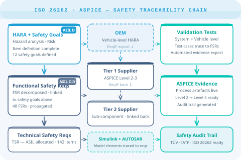

Achieve functional safety compliance for ISO 26262 and Automotive SPICE across complex OEM and supplier ecosystems — with full traceability from safety goal to verified test evidence.

Modern vehicles contain over 100 million lines of code across dozens of ECUs. OEMs demand ASPICE Level 2 at minimum from Tier 1 suppliers. Functional safety under ISO 26262 requires continuous, auditable traceability from Hazard Analysis and Risk Assessment all the way through to test evidence.
Coordinating that across internal teams, external suppliers, and model-based engineering toolchains — without a unified system — is where safety compliance breaks down.
Safety requirements sent to Tier 2 suppliers in Word documents return as deliverables with no traceable link back to the vehicle-level safety goal.
Preparing evidence for ASPICE Level 2 or 3 assessments is a manual process pulling data from multiple disconnected sources.
Simulink models and AUTOSAR architectures evolve independently from the requirements system, causing drift and untracked impact.
Managing requirements and test cases across dozens of regional variants and model years multiplies the compliance burden without a structured approach.
Polarion was built alongside the development of ISO 26262 and Automotive SPICE. The workflows, templates, and traceability model reflect real functional safety programmes.
Pre-configured Hazard Analysis and Risk Assessment workflows. Safety goals classified by ASIL are automatically propagated to functional and technical safety requirements with traceable links.
ReqIF data exchange enables lossless requirements handoff to Tier 2 suppliers and back. Traceability is maintained across organisational boundaries without manual reconstruction.
Automated artefact history, workflow audit trails, and live dashboards generate the process evidence needed for ASPICE Level 2 and Level 3 assessments without manual preparation.
Native integration with MATLAB/Simulink links model elements to Polarion requirements. AUTOSAR component specifications are traceable from architecture through to implementation.
Product Line Engineering concepts allow requirements and test cases to be shared, specialised, or excluded per variant. Compliance evidence is always correct for each vehicle configuration.
Every change to every safety requirement, analysis item, and test case is timestamped, attributed, and immutably recorded. The audit trail withstands TÜV and IATF assessments.
Talk to us about your OEM programme, supplier assessment level, or Simulink integration challenges. We've delivered Polarion in both environments.